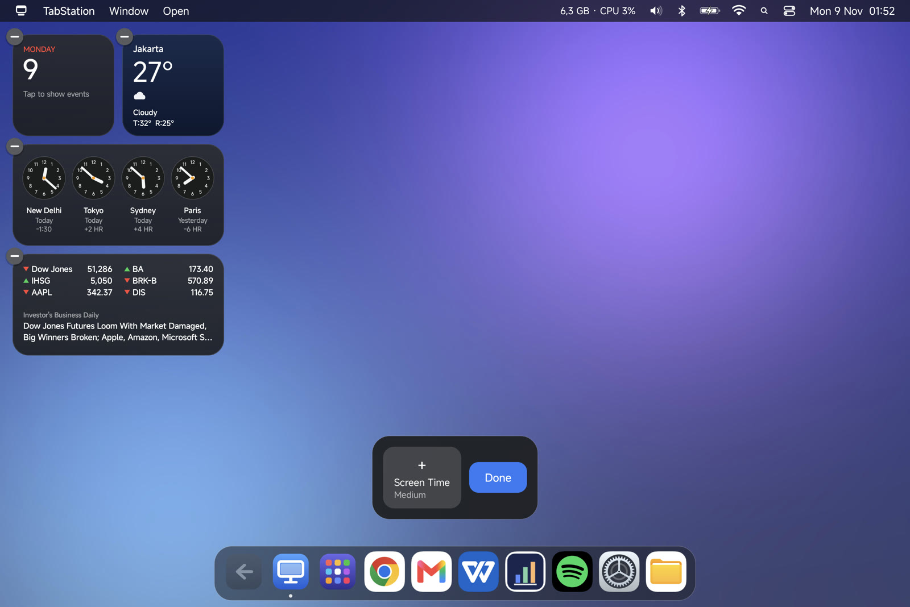
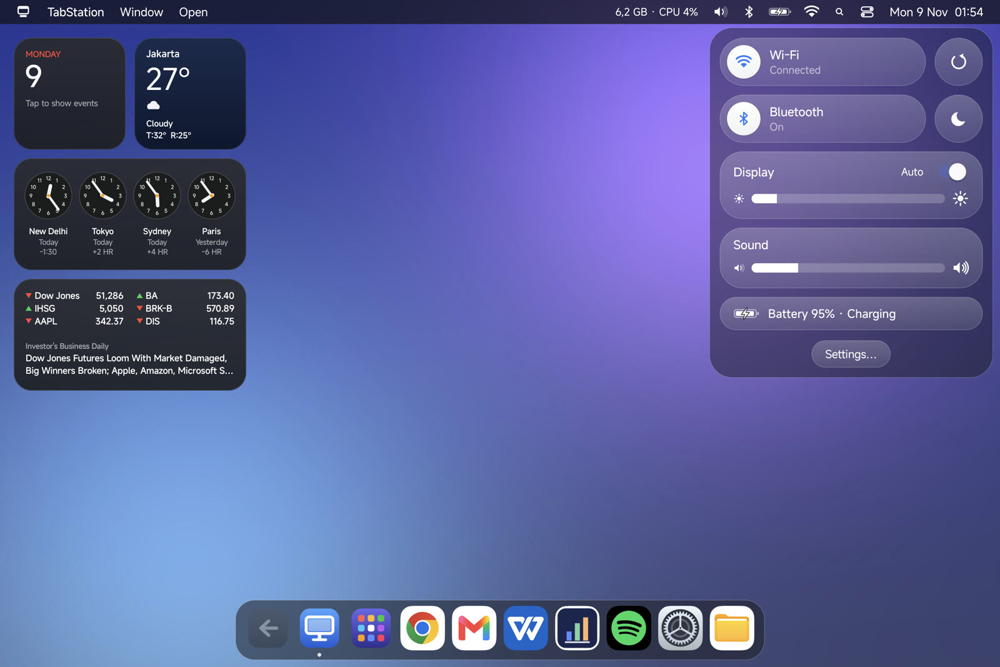
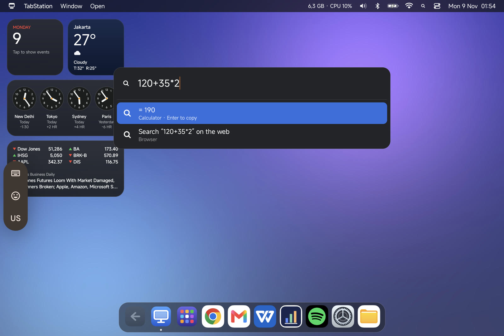
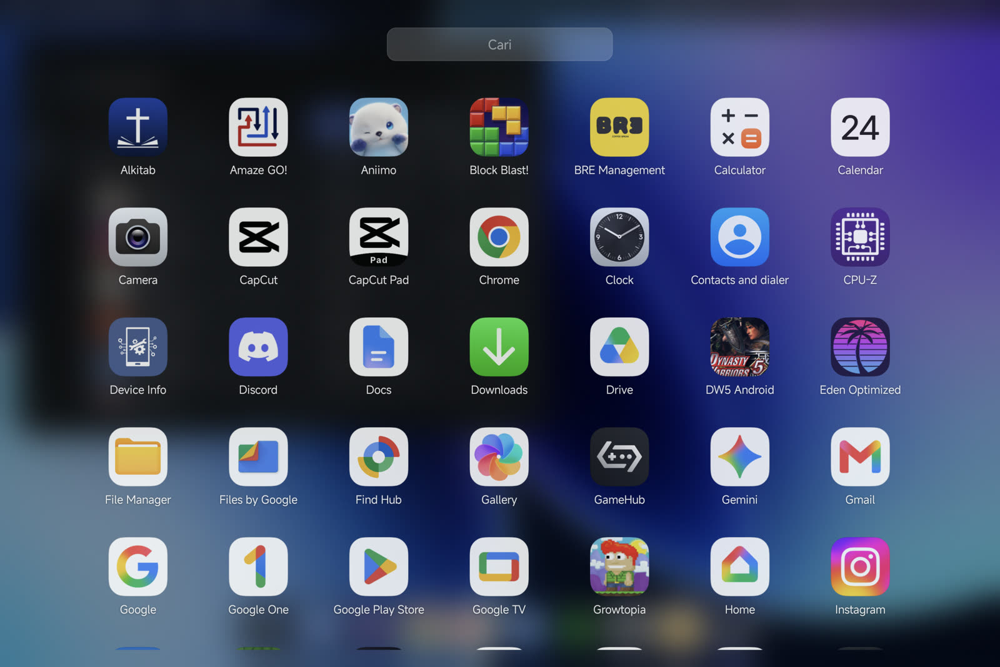
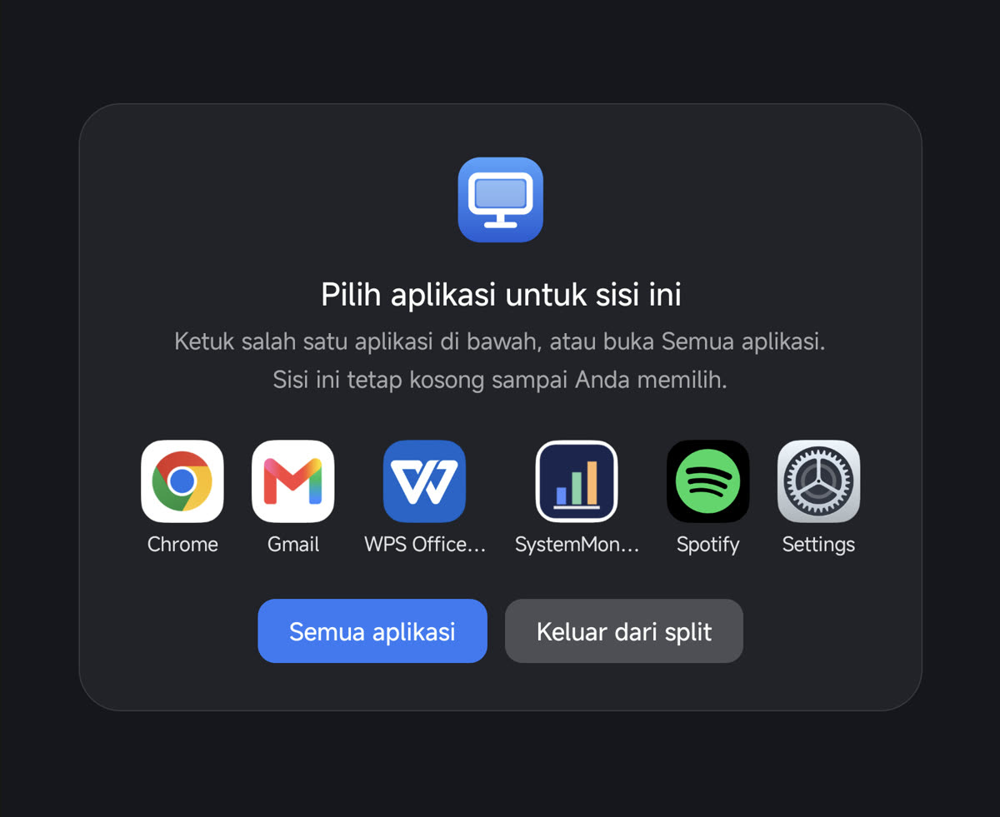

Tablet Android jadi desktop ala macOS atau Windows
Turn an Android tablet into a macOS- or Windows-style desktop
Dock dan menu bar, atau taskbar dan Start. Jendela aplikasi dengan tombol tutup, minimize, dan maximize, Launchpad, Control Center, dan split screen yang mudah ditutup. Matikan kapan saja dan tablet kembali ke tampilan bawaan. Tanpa root. Internet hanya untuk widget Cuaca dan Saham.
A Dock and menu bar, or a taskbar and Start. App windows with close, minimize and maximize buttons, Launchpad, Control Center, and split screen that is easy to leave. Switch it off any time and the tablet goes back to its own launcher. No root. Internet is only used by the Weather and Stocks widgets.

Tangkapan layar
Screenshots










Fitur
Features
Dua tema: macOS & Windows
Two themes: macOS & Windows
macOS: menu bar, Dock, Launchpad, Control Center dengan Liquid Glass (transparansi bisa diatur). Windows: taskbar, Start, tray jam dan baterai, info RAM·CPU di kiri bawah.
macOS: menu bar, Dock, Launchpad, Control Center with Liquid Glass (adjustable transparency). Windows: taskbar, Start, clock and battery tray, RAM·CPU in the bottom-left.
Tombol jendela
Window buttons
Lampu merah-kuning-hijau (macOS) atau — ▢ ✕ (Windows) di jendela yang aktif. Minimize ke Dock dengan animasi, maximize ke layar penuh sungguhan, tutup semua jendela aplikasi sekaligus.
Red-yellow-green lights (macOS) or — ▢ ✕ (Windows) on the active window. Minimize to the Dock with an animation, maximize to true full screen, close every window of the app at once.
Taskbar yang tidak berpindah-pindah
A taskbar that stays put
Hanya aplikasi yang disematkan dan yang sedang terbuka. Urutan tetap, dan ikon bisa digeser untuk mengatur posisinya seperti di Windows atau Mac.
Only pinned and open apps. The order stays fixed, and icons can be dragged to rearrange them like on Windows or a Mac.
Split screen yang jelas
Clear split screen
Tombol tutup muncul di sisi yang diketuk; sisi lain langsung mengisi layar tanpa launcher Xiaomi berkedip. Split yang tersangkut atau berisi game dibubarkan otomatis.
A close button appears on the side you tap; the other side fills the screen without the Xiaomi launcher flashing. Stuck splits, or splits with a game, are undone automatically.
Navigasi tanpa bilah ganda
Navigation without a second bar
Selama TabStation menyala, tombol Home membuka desktop TabStation dan tombol Kembali ada di Dock. Saat dimatikan, launcher Xiaomi dan gesture HyperOS kembali seperti semula.
While TabStation is on, Home opens the TabStation desktop and Back lives in the Dock. Switch it off and the Xiaomi launcher and HyperOS gestures come back as before.
Dua bahasa
Two languages
Bahasa Indonesia atau English, dipilih sebelum TabStation dinyalakan atau kapan saja di Pengaturan. Berlaku untuk menu bar, Dock, Launchpad, Control Center, widget, Spotlight, dan dialog.
Bahasa Indonesia or English, chosen before switching TabStation on or any time in Settings. Covers the menu bar, Dock, Launchpad, Control Center, widgets, Spotlight and dialogs.
Ringan & hemat data
Light & frugal
Satu sesi shell Shizuku untuk semua perintah, polling berhenti saat layar mati, dan cache ikon dilepas saat Android kekurangan memori. Internet hanya dipakai widget Cuaca dan Saham, paling sering 30 menit sekali.
One Shizuku shell session for every command, polling pauses while the screen is off, and icon caches are dropped when Android is low on memory. Internet is only used by the Weather and Stocks widgets, at most every 30 minutes.
Widget yang bisa diatur
Widgets you can arrange
Kalender, Cuaca, Jam Dunia, Saham, dan Screen Time di desktop macOS. Tahan lalu geser untuk memindah, mode Edit untuk menambah atau menghapus.
Calendar, Weather, World Clock, Stocks and Screen Time on the macOS desktop. Hold and drag to move, Edit mode to add or remove.
Spotlight & Snap Layouts
Spotlight & Snap Layouts
Cari aplikasi, pengaturan, hitung cepat, atau cari di web. Tahan tombol ▢ / lampu hijau untuk menata jendela separuh, ⅔ + ⅓, tiga kolom, atau empat kotak.
Find apps and settings, do quick maths or search the web. Hold the ▢ button / green light to tile windows in halves, ⅔ + ⅓, thirds or quarters.
Pintasan keyboard
Keyboard shortcuts
Ctrl+Alt (⌃⌥) + huruf atau panah, Alt+Spasi, dan Alt+` untuk keyboard fisik. Dipilih supaya tidak bentrok dengan pintasan HyperOS dan Android.
Ctrl+Alt (⌃⌥) + a letter or arrow, Alt+Space and Alt+` for a physical keyboard. Chosen so they don't clash with HyperOS or Android shortcuts.
Pintasan keyboard
Keyboard shortcuts
Butuh keyboard fisik dan Shizuku. Di keyboard gaya Mac, Ctrl = ⌃ dan Alt = ⌥. Alt/Win + Tab, Win + panah, dan Win + huruf tetap milik HyperOS.
Needs a physical keyboard and Shizuku. On a Mac-style keyboard Ctrl = ⌃ and Alt = ⌥. Alt/Win + Tab, Win + arrows and Win + letters stay with HyperOS.
| Alt + Space | Spotlight (macOS) / Cari (Windows) | Spotlight (macOS) / Search (Windows) |
| Alt + ` | Pengalih jendela TabStation (Shift = mundur) | TabStation window switcher (Shift = back) |
| Ctrl + Alt + A | Launchpad / Start | Launchpad / Start |
| Ctrl + Alt + D | Tampilkan desktop | Show desktop |
| Ctrl + Alt + E | File Manager | File manager |
| Ctrl + Alt + C | Control Center / Quick Settings | Control Center / Quick Settings |
| Ctrl + Alt + N | Pusat Notifikasi | Notification Center |
| Ctrl + Alt + ← / → | Jendela separuh kiri / kanan | Window to the left / right half |
| Ctrl + Alt + ↑ / ↓ | Layar penuh / minimize | Full screen / minimize |
| Ctrl + Alt + Q | Tutup aplikasi | Close the app |
| Ctrl + Alt + R | Refresh | Refresh |
| Ctrl + Alt + L | Kunci layar | Lock screen |
Pengaturan awal
First-time setup
Halaman Panduan setup di aplikasi memeriksa setiap langkah, dan dengan Shizuku hampir semua izin bisa diberikan sekali ketuk ("Berikan semua izin lewat Shizuku"). Langkah yang disarankan tidak menghalangi pemakaian.
The in-app Setup guide checks every step, and with Shizuku almost every permission is one tap ("Grant everything through Shizuku"). Recommended steps never block you.
- Pasang APKInstall the APK Unduh di tablet dan izinkan pemasangan dari browser. Kalau Play Protect bertanya, pilih "Install anyway". Download on the tablet and allow installs from the browser. If Play Protect asks, choose "Install anyway".
- Tampil di atas aplikasi lainDisplay over other appswajibrequired Untuk Dock/taskbar, menu bar, Launchpad, dan panel-panel TabStation. For the Dock/taskbar, menu bar, Launchpad and TabStation's panels.
- Akses penggunaan aplikasiUsage accesswajibrequired Untuk mengetahui aplikasi yang sedang terbuka (titik di ikon, nama di menu bar, sembunyi otomatis). To know which apps are open (dots under icons, the menu bar name, auto-hide).
- Shizuku: pasang, jalankan, beri izinShizuku: install, start, allowdisarankanrecommended Dari Play Store atau rilis resmi RikkaApps. Start lewat Wireless debugging, lalu "Beri izin" di Setup. Dibutuhkan untuk tombol jendela, tombol Kembali di Dock, split screen, dan pemberian izin sekali ketuk. From the Play Store or the official RikkaApps release. Start it through Wireless debugging, then "Grant" in Setup. Needed for window buttons, the Back button in the Dock, split screen and one-tap permissions.
- Ubah pengaturan sistem & navigasiModify system settings & navigationdisarankanrecommended Untuk kecerahan, kunci rotasi, timeout layar, dan menukar navigasi Android saat TabStation dinyalakan atau dimatikan. For brightness, rotation lock, screen timeout, and swapping Android navigation when TabStation is switched on or off.
- Notifikasi & BluetoothNotifications & Bluetoothdisarankanrecommended Untuk Pusat Notifikasi, Jangan Ganggu, dan daftar perangkat Bluetooth di menu bar. For the Notification Center, Do Not Disturb, and the Bluetooth device list in the menu bar.
- Xiaomi: Autostart & bateraiXiaomi: Autostart & batterydisarankanrecommended Supaya TabStation menyala lagi setelah restart atau update, dan HyperOS tidak menghentikan Dock di latar belakang. So TabStation comes back after a restart or update, and HyperOS doesn't stop the Dock in the background.
Dukung TabStation
Support TabStation
TabStation gratis dan tanpa iklan.
Kalau aplikasi ini berguna, kamu bisa traktir kopi lewat Saweria untuk membantu pengembangan berikutnya.
TabStation is free and has no ads.
If it helps you, you can buy me a coffee on Saweria to support what comes next.
FAQ
UmumGeneral· 4
Apa itu TabStation dan apa yang dibutuhkan?What is TabStation and what do I need?
Lapisan desktop untuk tablet Android: Dock, menu bar, taskbar, dan tombol jendela di atas aplikasi biasa. Yang dibutuhkan: Android 10+. Shizuku sangat disarankan untuk fitur jendela dan navigasi. Tanpa root.
A desktop layer for Android tablets: Dock, menu bar, taskbar and window buttons on top of regular apps. You need Android 10+. Shizuku is strongly recommended for window and navigation features. No root.
Apakah launcher Xiaomi saya diganti?Does it replace my Xiaomi launcher?
Hanya selama TabStation menyala. Begitu dimatikan dari menu TabStation, launcher Xiaomi kembali jadi Home dan gesture HyperOS aktif lagi. Saat mematikan, kamu juga bisa memilih untuk menutup semua aplikasi.
Only while TabStation is on. Switch it off from the TabStation menu and the Xiaomi launcher is Home again with HyperOS gestures back. When switching off you can also choose to close every app.
Data apa yang dikumpulkan?What data is collected?
Tidak ada. TabStation tidak punya server. Internet hanya dipakai widget Cuaca (Open-Meteo) dan Saham (Yahoo Finance), dan bisa dimatikan. Notifikasi, kalender, dan daftar aplikasi hanya ditampilkan di tablet.
None. TabStation has no server. Internet is only used by the Weather (Open-Meteo) and Stocks (Yahoo Finance) widgets, which can be switched off. Notifications, calendar and the app list are only shown on the tablet.
Kenapa tidak ada di Play Store?Why isn't it on the Play Store?
TabStation bergantung pada Shizuku dan perintah shell, jadi dibagikan langsung di sini. Setiap rilis ditandatangani dengan kunci yang sama dan disertai SHA-256.
It depends on Shizuku and shell commands, so it is distributed here. Every release is signed with the same key and comes with its SHA-256.
PenggunaanUsing it· 7
Bagaimana keluar dari split screen?How do I leave split screen?
Ketuk sisi yang ingin ditutup lalu tekan tombol tutup merah di pojoknya; sisi lain langsung jadi layar penuh. Bila satu sisi kosong, panelnya punya tombol "Keluar dari split".
Tap the side you want to close and press the red close button in its corner; the other side goes full screen. If a side is empty, its panel has a "Leave split" button.
Kenapa game selalu dibuka layar penuh?Why do games always open full screen?
Di jendela mengambang atau split, posisi sentuhan di banyak game meleset. TabStation membuka game dalam layar penuh; aplikasi lain bisa dipaksa layar penuh lewat menu konteks ikonnya (tahan ikon → "Selalu buka layar penuh").
In floating windows or split screen, touches land in the wrong place in many games. TabStation opens games full screen; any other app can be forced full screen from its icon menu (hold the icon → "Always open full screen").
Bisakah urutan ikon di Dock/taskbar diatur?Can I reorder Dock/taskbar icons?
Bisa. Tahan ikon lalu geser ke posisi baru; ikon lain bergeser memberi tempat. Urutannya disimpan dan tidak berubah saat aplikasi dibuka atau ditutup.
Yes. Hold an icon and drag it to a new spot; the others move aside. The order is saved and doesn't change as apps open and close.
Bagaimana mengatur widget di desktop macOS?How do I arrange the macOS desktop widgets?
Tahan sebuah widget lalu geser; ia terangkat dan meluncur ke kotak kosong terdekat saat dilepas. Klik kanan desktop → "Edit Widget…" (atau tahan widget → Edit Widget) membuka mode edit: tanda − untuk menghapus, galeri di bawah untuk menambah, Selesai untuk keluar. Posisi tersimpan.
Press and hold a widget, then drag; it lifts and snaps to the nearest free spot when released. Right-click the desktop → "Edit Widgets…" (or hold a widget → Edit Widgets) opens edit mode: − removes, the gallery at the bottom adds, Done exits. Positions are saved.
Bagaimana mengganti bahasa?How do I change the language?
Di dialog yang muncul saat menekan "Nyalakan TabStation", atau kapan saja di Pengaturan → Bahasa / Language. Pilihan ini selalu ditulis dalam dua bahasa supaya mudah ditemukan.
In the dialog shown when you tap "Turn on TabStation", or any time in Settings → Bahasa / Language. That option is always written in both languages so it's easy to find.
Apakah pintasan keyboard bentrok dengan HyperOS?Do the keyboard shortcuts clash with HyperOS?
Tidak. TabStation memakai Ctrl+Alt + huruf/panah, Alt+Spasi, dan Alt+`; Alt/Win+Tab, Win+panah, dan Win+huruf tetap milik HyperOS. Tombol tetap diterima aplikasi yang aktif. Pintasan HyperOS sendiri hanya bisa dimatikan dari pengaturan keyboard HyperOS (ada tautannya di Pengaturan TabStation).
No. TabStation uses Ctrl+Alt + letter/arrow, Alt+Space and Alt+`; Alt/Win+Tab, Win+arrows and Win+letters stay with HyperOS. Keys are still delivered to the active app. HyperOS's own shortcuts can only be turned off in HyperOS keyboard settings (linked from TabStation Settings).
Apakah boros baterai?Does it drain the battery?
Pemeriksaan jendela hanya rapat saat ada jendela atau split yang terlihat, dan semuanya berhenti saat layar mati. Pemakaian CPU biasanya di bawah 1–2%.
Window checks only run quickly while a window or split is visible, and everything stops while the screen is off. CPU use is usually under 1–2%.
MasalahTroubleshooting· 4
Tombol jendela atau tombol Kembali tidak munculWindow buttons or the Back button are missing
Keduanya butuh Shizuku yang sedang berjalan dan sudah mengizinkan TabStation. Buka Panduan setup: langkah yang belum selesai menunjukkan apa yang perlu dilakukan. Tanpa Shizuku, bilah navigasi Android tetap ditampilkan supaya kamu tidak pernah kehilangan navigasi.
Both need Shizuku running and allowing TabStation. Open the Setup guide: the unfinished step shows what to do. Without Shizuku, Android's navigation bar stays visible so you never lose navigation.
TabStation tidak muncul lagi setelah update/restartTabStation doesn't come back after an update or restart
Di Xiaomi, izinkan Autostart dan "Tanpa batasan" baterai untuk TabStation (satu ketuk di Setup bila Shizuku aktif). Shizuku juga perlu "Start on boot".
On Xiaomi, allow Autostart and "No restrictions" battery for TabStation (one tap in Setup with Shizuku). Shizuku also needs "Start on boot".
Setelah layar dikunci, jendela jadi kecil atau ada kotak hitam di layar kunciAfter locking, windows shrink or a black box shows on the lock screen
Itu perilaku HyperOS: saat layar mati, jendela mengambang diubah jadi jendela mini dan bentuknya tampak hitam di layar kunci. Kunci lewat TabStation (menu logo, menu daya Start, Ctrl+Alt+L) menampilkan desktop dulu supaya layar kunci bersih, dan setelah dibuka jendela dikembalikan seperti semula. Jika mengunci dengan tombol daya fisik, jendela juga dipulihkan setelah dibuka.
That's HyperOS: when the screen turns off, floating windows become mini windows, which show as a black shape on the lock screen. Locking through TabStation (logo menu, Start power menu, Ctrl+Alt+L) shows the desktop first so the lock screen stays clean, and windows are restored after unlocking. If you lock with the physical power button, windows are still restored after unlocking.
Update dari versi lamaUpdating from an older version
Pasang APK baru di atas yang lama; pengaturan, urutan ikon, dan izin tetap.
Install the new APK over the old one; settings, icon order and permissions are kept.
Saran, masukan, atau laporan masalah?
Kirim email — sertakan versi TabStation, tipe tablet, dan apa yang terjadi.
Suggestions, feedback or a bug?
Send an email — include the TabStation version, your tablet and what happened.